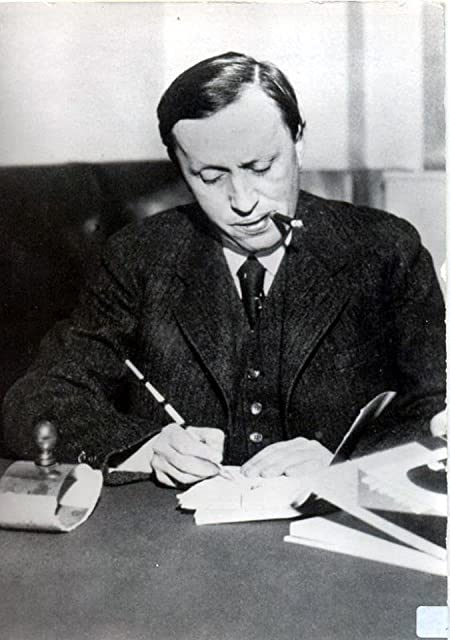

Karel Capek was a famous Czech writer, playwright, journalist and critic.
He was the younger brother of Josef Capek - a painter and writer.
K. Capek is very known for his political science fiction plays, such as War with the Newts or R.U.R.
(Rossum's Universal Robots) and his novels.
He was strongly opposed to the fascism and communism.
Capek was nominated seven times for the Nobel Prize in Literature, but never recieved it.
He died on the brink of World War II due to his lifelong medical condition.
Karel Capek
9 january 1890 - 25 december 1938
